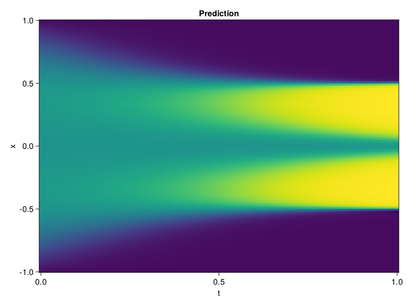

Allen-Cahn Equation with Sequential Training
In this tutorial we are going to solve the Allen-Cahn equation with periodic boundary condition from $t=0$ to $t=1$. The traning process is split into four stages, namely $t\in [0,0.25]$, $t\in [0.0,0.5]$, $t\in [0.0,0.75]$ and $t\in [0.0, 1.0]$.
using ModelingToolkit, IntervalSets
using Sophon
using Optimization, OptimizationOptimJL
@parameters t, x
@variables u(..)
Dₓ = Differential(x)
Dₓ² = Differential(x)^2
Dₜ = Differential(t)
eq = Dₜ(u(x, t)) - 0.0001 * Dₓ²(u(x, t)) + 5 * u(x,t) * (abs2(u(x,t)) - 1.0) ~ 0.0
domain = [x ∈ -1.0..1.0, t ∈ 0.0..0.25]
bcs = [u(x,0) ~ x^2 * cospi(x),
u(-1,t) ~ u(1,t)]
@named allen = PDESystem(eq, bcs, domain, [x, t], [u(x, t)])\[ \begin{align} - 0.0001 \frac{\mathrm{d}^{2}}{\mathrm{d}x^{2}} u\left( x, t \right) + 5 \left( -1.0 + \left|u\left( x, t \right)\right|^{2} \right) u\left( x, t \right) + \frac{\mathrm{d}}{\mathrm{d}t} u\left( x, t \right) =& 0.0 \end{align} \]
Then we define the neural net, the sampler, and the training strategy.
chain = FullyConnected(2, 1, tanh; hidden_dims=16, num_layers=4)
pinn = PINN(chain)
sampler = QuasiRandomSampler(500, (300, 100))
strategy = NonAdaptiveTraining(1, (50, 1))
prob = Sophon.discretize(allen, pinn, sampler, strategy)OptimizationProblem. In-place: true
u0: ComponentVector{Float64}(layer_1 = (weight = [-0.33971554040908813 -0.33293816447257996; 1.0391703844070435 -1.207207202911377; … ; -0.39162397384643555 -0.6447059512138367; 0.16418465971946716 0.13925985991954803], bias = [0.0; 0.0; … ; 0.0; 0.0;;]), layer_2 = (weight = [-0.5644817352294922 0.5220785737037659 … -0.6103760600090027 -0.21278095245361328; 0.20215438306331635 -0.0525430291891098 … 0.5671505928039551 0.022183408960700035; … ; -0.19041600823402405 0.3615044355392456 … 0.39141902327537537 -0.06363047659397125; -0.16426241397857666 0.3598933219909668 … 0.6518365144729614 -0.2621075212955475], bias = [0.0; 0.0; … ; 0.0; 0.0;;]), layer_3 = (weight = [-0.44456538558006287 -0.4698335528373718 … 0.4583110511302948 -0.40168899297714233; -0.04433782398700714 0.6525415778160095 … -0.7154754996299744 -0.30815064907073975; … ; -0.3096266984939575 0.16191330552101135 … 0.5535841584205627 0.6714014410972595; 0.433855801820755 -0.11396205425262451 … -0.6716600060462952 -0.6933910250663757], bias = [0.0; 0.0; … ; 0.0; 0.0;;]), layer_4 = (weight = [0.4324817955493927 -0.5912892818450928 … -0.20289193093776703 0.6371622085571289; -0.6181970834732056 -0.12743361294269562 … -0.5233844518661499 0.058469507843256; … ; 0.46478936076164246 -0.6388378143310547 … -0.44315850734710693 0.3904605507850647; -0.008522232994437218 -0.6217406988143921 … -0.029908642172813416 0.1816224306821823], bias = [0.0; 0.0; … ; 0.0; 0.0;;]), layer_5 = (weight = [-0.5878686308860779 -0.5996074080467224 … 0.5506898760795593 0.6572012901306152], bias = [0.0;;]))We solve the equation sequentially in time.
function train(allen, prob, sampler, strategy)
bfgs = BFGS()
res = Optimization.solve(prob, bfgs; maxiters=2000)
for tmax in [0.5, 0.75, 1.0]
allen.domain[2] = t ∈ 0.0..tmax
data = Sophon.sample(allen, sampler, strategy)
prob = remake(prob; u0=res.u, p=data)
res = Optimization.solve(prob, bfgs; maxiters=2000)
end
return res
end
res = train(allen, prob, sampler, strategy)u: ComponentVector{Float64}(layer_1 = (weight = [-0.3986418288262189 -0.6354184818915227; 2.313240486500602 -0.7267216298012226; … ; 0.20921072184219655 -0.6360031731332367; -0.03565409747361022 0.049650415147799644], bias = [0.059724242436522385; 0.5355402251111158; … ; 0.40052667036982526; 0.48330543449028474;;]), layer_2 = (weight = [-0.6423850125398192 0.3080298938704129 … -0.5945592713202983 -0.3154755628241313; 0.12441231883546694 0.01779475210567404 … 0.5704493762471202 -0.24105240602194233; … ; -0.29581362742467904 0.06580744208141422 … 0.4404165794539302 -0.002683976182607004; -0.28321938953199155 0.18855597174193878 … 0.4175327464315259 -0.3000363101653945], bias = [-0.16021324627387706; -0.25183566359519455; … ; 0.3405089563352502; 0.025856092566115856;;]), layer_3 = (weight = [-0.6296871742253131 -1.1764856553025993 … 0.9436649135653141 -0.8344619898497161; -0.43449140573240436 0.7172908382198178 … -0.42035742579287655 0.004544163316347206; … ; -0.4947005500786132 0.2348048891338579 … 0.6025075041432224 0.5860827466822951; 0.46583455568459986 -0.810857773110442 … -0.2782267733737809 -1.0105662313896884], bias = [-0.48323037349935827; 0.22593215965310004; … ; -0.02686319841709036; -0.03238318463971898;;]), layer_4 = (weight = [0.8590335122176754 -1.117499821756298 … -0.40503689251462704 0.7189220362192127; -0.8108143415310972 0.16449924981237565 … -0.24099471287426327 0.26761058157124584; … ; 0.3076377283521392 0.1106113795209791 … -0.9124745485092102 0.26966486531405304; 0.13342787616280385 -0.9292725797604041 … 0.17716443823733133 0.49569333212319516], bias = [0.2937314449605356; 0.26089047959348094; … ; -0.4155804295631831; -0.07173247778934277;;]), layer_5 = (weight = [-0.7147824412425282 -0.5686508216950027 … 0.5930174396118707 0.4589491904921984], bias = [0.03713775904461375;;]))Let's plot the result.
using CairoMakie
phi = pinn.phi
xs, ts = [infimum(d.domain):0.01:supremum(d.domain) for d in allen.domain]
axis = (xlabel="t", ylabel="x", title="Prediction")
u_pred = [sum(pinn.phi([x, t], res.u)) for x in xs, t in ts]
fig, ax, hm = heatmap(ts, xs, u_pred', axis=axis)